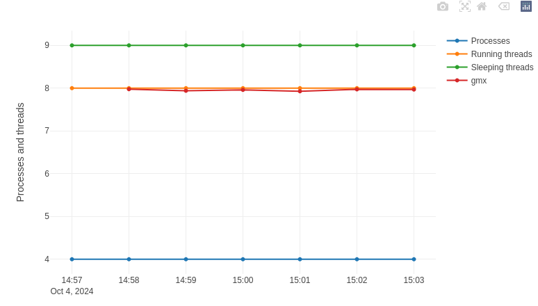

User portals#
Some clusters offer a portal to monitor your current jobs and even your recently completed jobs. Here they are:
Trillium and Trillium GPU: https://my.scinet.utoronto.ca
In all cases, you must log in with your CCDB portal credentials.
Note
Following the 2025 infrastructure renewal, not all clusters have a user portal already. New portals and functionalities will be added progressively.
Narval and Rorqual job statistics#
In the cluster portal, a table listing your most recent jobs can be found in the Your jobs section of the Job stats page from the side menu.
Clicking on one of the job identifiers takes you to a page displaying all available information about the job:
The loaded modules, if any.
If applicable, one or more diagnostic messages giving suggestions for improving the job script.
A button to view the job script.
A button to view the job submission command.
The job history.
A summary table of the requested resources.
A complete analysis of resources used (if measured) over time:
CPU usage. In the figure below, 8 of the 12 cores requested for the job are 100 % utilized.
Memory usage.
Number of processes and threads. In the figure below, we see four (4) processes each using two (2)
gmxthreads, so 8 running threads. The network file system usage.
The compute node’s shared resources:
Ethernet and Infiniband bandwidth.
Local storage usage (number of operations, bandwidth, total usage).
Electrical power used.
For more images and information, see the documentation section here.
Trillium job statistics#
In the SciNet portal, your latest jobs are categorized by cluster:
Trillium (CPU) : https://my.scinet.utoronto.ca/jobs/?q=cluster:trillium
Trillium GPU : https://my.scinet.utoronto.ca/jobs/?q=cluster:trillium-gpu
Clicking on one of the job identifiers takes you to a page displaying all available information about the job:
The job history.
A complete analysis of resources used (if measured) over time:
Average CPU utilization per node. In the figure below, each colored dot corresponds to one of the 8 nodes reserved for the job.
Available memory.
Floating point operations per second.
Data throughput in memory.
Data transmitted via Infiniband.
etc.
The job script.
The environment variables of the running job.